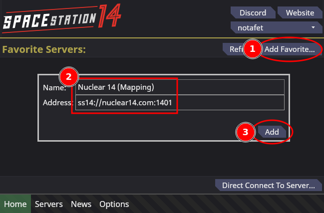
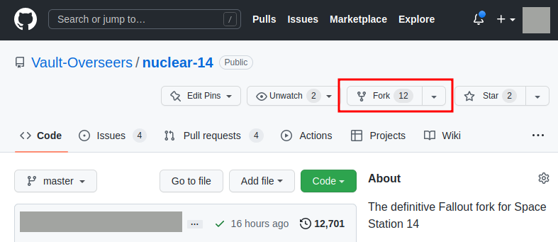
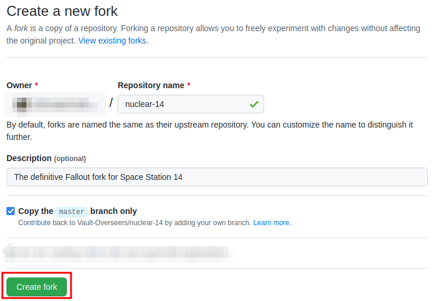
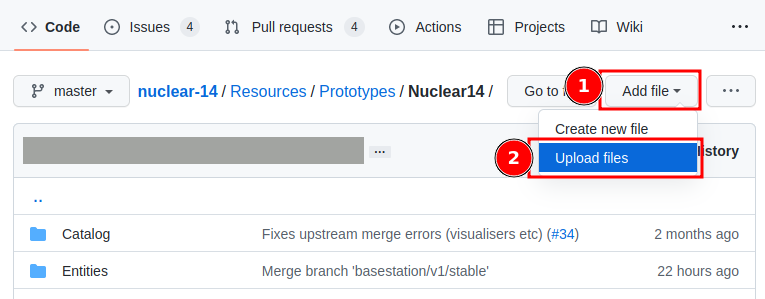
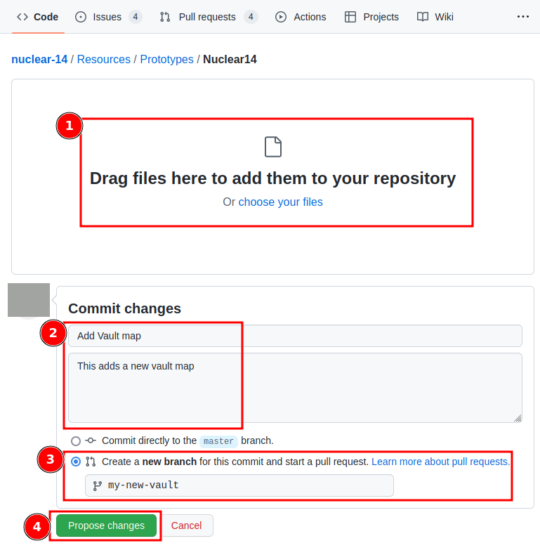

Nuclear 14 Contributor's Guide
Nuclear 14 is based on Space Station 14 (the upstream), which has developer documentation that cover most things that you might want to do that aren't described here.
Mapping
You can help map for Nuclear 14 by following the upstream mapping guide.
This involves setting up a development environment, cloning the Nuclear 14 repository, and mapping on your local development server.
Alternatively, you can map on our official mapping server:
- Ask for a
@mapper role on our Discord. This grants you whitelist access to the mapping server.
- Install Space Station 14 and open the launcher.
- Add the mapping server to your launcher.

- Connect to the mapping server from the launcher. If you cannot connect, either the mapping server is down, or you have not been approved for the whitelist.
In both cases, contact us on Discord.
- Follow the upstream mapping guide from the Start Mapping section.
- When saving your map, save to a path unique to you. For example, if your SS14 username is
fluff, you should save your map to /fluff/my_map.yaml.
- Contact us on Discord when you are ready for feedback on your map. Your map does not have to be finished for us to give feedback; get feedback early!
Spriting
To be written
Contributing Files
You can contribute files (for example, when mapping and spriting) through the Github web UI without having to install and use Git:
- Go to our Github page and fork our repository:


- You should end up at the page for your fork of Nuclear 14. Navigate to the folder where you want to upload your files.
- For maps, this is Resources/Maps/
- For sprites, this is Resources/Textures/Nuclear14/
- For item (entity) prototypes, this is Resources/Prototypes/Nuclear14/
- Use the "Add files" and "Upload files" drop down to upload your files

- On the file upload screen:

- Drag the files you want to upload
- Give your change a descriptive title and description
- Select "Create a new branch" and name your branch (no spaces)
- Click "Propose changes"
Cloning Nuclear 14
From the command line:
git clone https://github.com/Vault-Overseers/nuclear-14.git